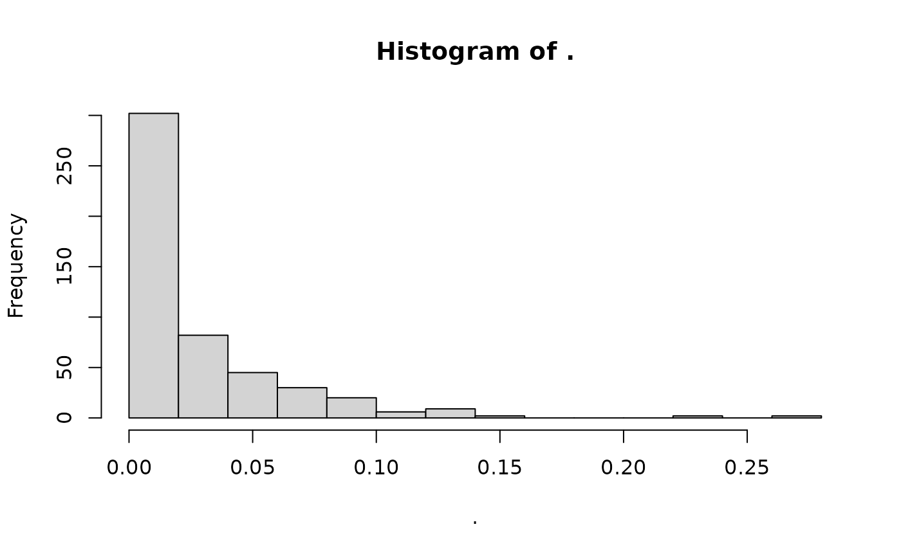

overview
a01_overview.Rmdtidy data in population genetics
The fundamental tenet of tidy data that is that each observation should have its own row and each variable its own column, such that each value has its own cell. Applying this logic to population genetic data means that each individual should have its own row, with individual metadata (such as its population, sex, phenotype, etc) as the variables. Genotypes for each locus can also be thought of as variables, however, due to the large number of loci and the restricted values that each genotype can take, it would be very inefficient to store them as individual standard columns.
In tidypopgen, we represent data as a
gen_tbl, a subclass of tibble which has three
compulsory columns: id of the individual (as a
character, which must be unique for each individual),
population giving the population the individuals belong to
(a character), and genotypes (stored in a
compressed format as a File-Backed Matrix, with the vector in the tibble
providing the row indices of the matrix for each individual). The real
data reside on disk, and an attribute bigsnp of the
genotype column contains all the information to access it.
There is also an additional attribute , loci which provides
all the information about the loci, including the column indices that
represent each locus in the FBM. The vector of row indices and the table
of loci can be subsetted and reordered without changing the data on
disk; thus, any operation on the gen_tibble is fast as it
shapes the indices of the genotype matrix rather than the matrix
itself.
The loci tibble includes columns big_index for
the index in the FBM, name for the locus name (a
character, which must be unique), chromosome
for the chromosome (an integer, if known, otherwise set to
NA), position for the position on the
chromosome (an integer, if known, otherwise set to
NA), genetic_dist for the genetic distance on
the chromosome (numeric, if known, else set to 0)
allele_ref for the the reference allele (a
character), and allele_alt for the alternate
allele (a character, which can be 0 for
monomorphic loci, following the same convention as plink). Additional
individual metadata can be stored as columns in the main
gen_tbl, whilst additional loci information (such as the
position in centimorgans) can be added as columns in the
loci attribute table.
In principle, it is possible to use use multiple ways to compress the
genotypes. tidypopgen currently uses a bigSNP
object from the package bigsnpr. It is very fast and well
documented, but it is mostly geared towards diploid data.
tidypopgen expands that object to deal with different
levels of ploidy, including multiple ploidy within a single dataset;
however, most functions are currently incompatible with ploidy levels
other than 2 (but they will return a clear error message and avoid
computing anything incorrectly).
The grammar of population genetics
The gen_tibble
Given information about the individuals, their genotypes, and the loci:
library(tidypopgen)
#> Loading required package: dplyr
#>
#> Attaching package: 'dplyr'
#> The following objects are masked from 'package:stats':
#>
#> filter, lag
#> The following objects are masked from 'package:base':
#>
#> intersect, setdiff, setequal, union
#> Loading required package: tibble
example_indiv_meta <- data.frame (id=c("a","b","c","d","e"),
population = c("pop1","pop1","pop2","pop2","pop2"))
example_genotypes <- rbind(c(1, 1, 0, 1, 1, 0),
c(2, 0, 0, 0,NA, 0),
c(1, 2, 0, 0, 1, 1),
c(0, 2, 0, 1, 2, 1),
c(1, 1,NA, 2, 1, 0))
example_loci <- data.frame(name=c("rs1","rs2","rs3","rs4","x1","x2"),
chromosome=c(1,1,1,1,2,2),
position=c(3,5,65,343,23,456),
genetic_dist = c(0,0,0,0,0,0),
allele_ref = c("A","T","C","G","C","T"),
allele_alt = c("T","C", NA,"C","G","A"))We can create a simple gen_tibble object (of class
gen_tbl) with:
example_gt <- gen_tibble(example_genotypes,
indiv_meta = example_indiv_meta,
loci=example_loci,
backingfile = tempfile())
#>
#> gen_tibble saved to /tmp/RtmpUyZqki/file1ca4799d91a6.gt
#> using bigSNP file: /tmp/RtmpUyZqki/file1ca4799d91a6.rds
#> with backing file: /tmp/RtmpUyZqki/file1ca4799d91a6.bk
#> make sure that you do NOT delete those files!
#> to reload the gen_tibble in another session, use:
#> gt_load('/tmp/RtmpUyZqki/file1ca4799d91a6.gt')We are provided information on where the three files underlying the
genotype information are stored. As we don’t want to keep the files, we
used the tmp directory; normally you will want to use your working
directory so that the files will not be cleared by R at the end of the
session. It is important that these files are not deleted or moved, as
gen_tibble stores their paths for future use.
Now let’s have a look at our gen_tibble:
example_gt
#> # A gen_tibble: 6 loci
#> # A tibble: 5 × 3
#> id population genotypes
#> <chr> <chr> <vctr_SNP>
#> 1 a pop1 1
#> 2 b pop1 2
#> 3 c pop2 3
#> 4 d pop2 4
#> 5 e pop2 5As discussed above, in this tibble, genotypes contains
the indices of the individuals in the FBM as values, and the FBM as an
attribute.
To retrieve the genotypes (which are compressed in the FBM), we use:
example_gt %>% show_genotypes()
#> [,1] [,2] [,3] [,4] [,5] [,6]
#> [1,] 1 1 0 1 1 0
#> [2,] 2 0 0 0 NA 0
#> [3,] 1 2 0 0 1 1
#> [4,] 0 2 0 1 2 1
#> [5,] 1 1 NA 2 1 0If we want to extract the information about the loci for which we have genotypes (which are stored as an attribute of that column), we say:
example_gt %>% show_loci()
#> # A tibble: 6 × 7
#> big_index name chromosome position genetic_dist allele_ref allele_alt
#> <int> <chr> <dbl> <dbl> <dbl> <chr> <chr>
#> 1 1 rs1 1 3 0 A T
#> 2 2 rs2 1 5 0 T C
#> 3 3 rs3 1 65 0 C NA
#> 4 4 rs4 1 343 0 G C
#> 5 5 x1 2 23 0 C G
#> 6 6 x2 2 456 0 T ANote that, if we are passing a gen_tibble to a function
that works on genotypes, it is generally not necessary to pass the
column genotypes in the call:
example_gt %>% indiv_het_obs()
#> [1] 0.6666667 0.0000000 0.5000000 0.3333333 0.6000000However, if such a function is used within a dplyr verb
such as mutate, we need to pass the genotype
column to the function:
example_gt %>% mutate (het_obs = indiv_het_obs(.data$genotypes))
#> # A gen_tibble: 6 loci
#> # A tibble: 5 × 4
#> id population genotypes het_obs
#> <chr> <chr> <vctr_SNP> <dbl>
#> 1 a pop1 1 0.667
#> 2 b pop1 2 0
#> 3 c pop2 3 0.5
#> 4 d pop2 4 0.333
#> 5 e pop2 5 0.6Or, more simply:
example_gt %>% mutate (het_obs = indiv_het_obs(genotypes))
#> # A gen_tibble: 6 loci
#> # A tibble: 5 × 4
#> id population genotypes het_obs
#> <chr> <chr> <vctr_SNP> <dbl>
#> 1 a pop1 1 0.667
#> 2 b pop1 2 0
#> 3 c pop2 3 0.5
#> 4 d pop2 4 0.333
#> 5 e pop2 5 0.6Standard dplyr verbs to manipulate the tibble
The individual metadata can then be processed with the usual
tidyverse grammar. So, we can filter individuals by
population with
example_pop1 <- example_gt %>% filter (population=="pop2")
example_pop1
#> # A gen_tibble: 6 loci
#> # A tibble: 3 × 3
#> id population genotypes
#> <chr> <chr> <vctr_SNP>
#> 1 c pop2 3
#> 2 d pop2 4
#> 3 e pop2 5There are a number of functions that compute population genetics quantities for each individual, such as individual observed heterozygosity. We can compute them simply with:
example_gt %>% indiv_het_obs()
#> [1] 0.6666667 0.0000000 0.5000000 0.3333333 0.6000000Or after filtering:
example_gt %>% filter (population=="pop2") %>% indiv_het_obs()
#> [1] 0.5000000 0.3333333 0.6000000We can use mutate to add observed heterozygosity as a
column to our gen_tibble (again, note that functions that
work on genotypes don’t need to be passed any arguments if the tibble is
passed directly to them, but the column genotypes has to be
provided when they are used within dplyr verbs such as
mutate):
example_gt %>% mutate(het_obs = indiv_het_obs(genotypes))
#> # A gen_tibble: 6 loci
#> # A tibble: 5 × 4
#> id population genotypes het_obs
#> <chr> <chr> <vctr_SNP> <dbl>
#> 1 a pop1 1 0.667
#> 2 b pop1 2 0
#> 3 c pop2 3 0.5
#> 4 d pop2 4 0.333
#> 5 e pop2 5 0.6There are a number of functions that estimate quantities at the
individual level, and they are prefixed by
indiv_.
Using verbs on loci
Since the genotypes of the loci are stored as a compressed list in
one column, it is not possible to use standard dplyr verbs
on them. However, tidypopgen provides a number of
specialised verbs, postfixed by _loci, to manipulate
loci.
A key operation on loci is their selection (and removal). The
compressed nature of genotypes imposes some constraints on the possible
grammar. For selection, there are two verbs: select_loci
and select_loci_if. select_loci understands
the concise-minilanguage spoken by standard dplyr::select
that allows to easily refer to variables by their names. However,
select_loci criteria can not be based on the actual
genotypes (e.g. on heterozygosity or missingness). For that, we have to
use select_loci_if, which can operate on the genotypes but
is blind to the names of loci.
Let us start by looking at the loci names in our simple dataset:
loci_names(example_gt)
#> [1] "rs1" "rs2" "rs3" "rs4" "x1" "x2"We can see that there are two categories of loci, one starting with “rs” and the other with “x”. If we wanted to select only loci that have an “rs” code, we would use:
example_sub <- example_gt %>% select_loci (starts_with("rs"))
example_sub
#> # A gen_tibble: 4 loci
#> # A tibble: 5 × 3
#> id population genotypes
#> <chr> <chr> <vctr_SNP>
#> 1 a pop1 1
#> 2 b pop1 2
#> 3 c pop2 3
#> 4 d pop2 4
#> 5 e pop2 5This gives us a gen_tibble with only 4 loci, as
expected. We can confirm that we have the correct loci with:
loci_names(example_sub)
#> [1] "rs1" "rs2" "rs3" "rs4"Let us check that this has indeed impacted the individual heterozygosity
example_sub %>% indiv_het_obs()
#> [1] 0.5000000 0.0000000 0.1666667 0.1666667 0.4000000We can also subset and reorder by passing indices:
example_gt %>% select_loci (c(2,6,1)) %>% show_loci()
#> # A tibble: 3 × 7
#> big_index name chromosome position genetic_dist allele_ref allele_alt
#> <int> <chr> <dbl> <dbl> <dbl> <chr> <chr>
#> 1 2 rs2 1 5 0 T C
#> 2 6 x2 2 456 0 T A
#> 3 1 rs1 1 3 0 A TThis operation could be helpful when merging datasets that do not fully overlap on their loci (more on that later).
example_gt %>% select_loci (c(2,6,1)) %>% show_genotypes()
#> [,1] [,2] [,3]
#> [1,] 1 0 1
#> [2,] 0 0 2
#> [3,] 2 1 1
#> [4,] 2 1 0
#> [5,] 1 0 1The limit of select_loci is that it can not directly
summarise the genotypes. We can do that separately and then feed the
result as a set of indices. For example, we might want to impose a
minimum minor allele frequency. loci_maf() allows us to
inspect the minimum allele frequencies in a gen_tibble:
We can now create a vector of indices of loci with a minimum allele frequency (MAF) larger than 0.2, and use it to select:
sel_indices <- which((example_gt %>% loci_maf())>0.2)
example_gt %>% select_loci (all_of(sel_indices)) %>% show_loci()
#> # A tibble: 4 × 7
#> big_index name chromosome position genetic_dist allele_ref allele_alt
#> <int> <chr> <dbl> <dbl> <dbl> <chr> <chr>
#> 1 1 rs1 1 3 0 A T
#> 2 2 rs2 1 5 0 T C
#> 3 4 rs4 1 343 0 G C
#> 4 5 x1 2 23 0 C GNote that passing a variable directly to select is
deprecated, and so we have to use all_of to wrap it.
select_loci_if allows us to avoid creating a temporary
variable to store indices:
example_gt_sub <- example_gt %>% select_loci_if(loci_maf(genotypes)>0.2)
example_gt_sub %>% show_genotypes()
#> [,1] [,2] [,3] [,4]
#> [1,] 1 1 1 1
#> [2,] 2 0 0 NA
#> [3,] 1 2 0 1
#> [4,] 0 2 1 2
#> [5,] 1 1 2 1Note that, as we need to tidy evaluate loci_maf within
the select_loci_if verb, we need to provide it with the
column that we want to use (even though it has to be
genotypes). Also note that, with
select_loci_if, we can not reorder the loci.
select_loci_if is very flexible; for example, we could
filter loci with a MAF greater than 0.2 that are also on chromosome
2.
We can use a similar approach to select only alleles on a given chromosome:
example_gt %>% select_loci_if(loci_chromosomes(genotypes)==2 &
loci_maf(genotypes)>0.2) %>% show_loci()
#> # A tibble: 1 × 7
#> big_index name chromosome position genetic_dist allele_ref allele_alt
#> <int> <chr> <dbl> <dbl> <dbl> <chr> <chr>
#> 1 5 x1 2 23 0 C GIncidentally, loci_maf() is one of several functions
that compute quantities by locus; they can be identified as they start
with loci_.
Grouping individuals in populations
In population genetics, we are generally interested in computing quantities that describe groups of individuals (i.e. populations). Grouping can be used in a number of ways.
As a starting point, we can group by population and get pop sizes:
example_gt %>% group_by(population) %>% tally()
#> # A tibble: 2 × 2
#> population n
#> <chr> <int>
#> 1 pop1 2
#> 2 pop2 3For functions that return one result per individual (such as
indiv_het_obs that we used before), we can use
summarise, which returns a new tibble with one
line per population. For example, we can count the number of individuals
per population, as well as their mean heterozygosity with :
example_gt %>% group_by(population) %>%
summarise(n= n(), mean_het = mean(indiv_het_obs(genotypes)))
#> # A tibble: 2 × 3
#> population n mean_het
#> <chr> <int> <dbl>
#> 1 pop1 2 0.333
#> 2 pop2 3 0.478However, note that this is somewhat inefficient, as computing the pop averages requires multiple access to the data. A more efficient approach is to:
example_gt %>% mutate(het_obs = indiv_het_obs(genotypes)) %>% group_by(population) %>%
summarise(n= n(), mean_het = mean(het_obs))
#> # A tibble: 2 × 3
#> population n mean_het
#> <chr> <int> <dbl>
#> 1 pop1 2 0.333
#> 2 pop2 3 0.478In this way, we compute all individual heterozygosities in one go (optimising our file access time), and then generate the population summaries.
For functions that return a quantity per locus
(e.g. loci_maf), we can use group_by together
with group_map to apply such functions over
populations:
example_gt %>% group_by(population) %>% group_map(.f = ~loci_maf(.x))
#> [[1]]
#> [1] 0.25 0.25 0.00 0.25 0.50 0.00
#>
#> [[2]]
#> [1] 0.3333333 0.1666667 0.0000000 0.5000000 0.3333333 0.3333333For more details on the syntax of group_map, see its
help page. Some functions, such as loci_maf(), also have a
method for grouped tibbles that allows an even easier syntax:
example_gt %>% group_by(population) %>% loci_maf()
#> [[1]]
#> [1] 0.25 0.25 0.00 0.25 0.50 0.00
#>
#> [[2]]
#> [1] 0.3333333 0.1666667 0.0000000 0.5000000 0.3333333 0.3333333In reality, such grouped methods are nothing more than a wrapper for
the the appropriate group_map syntax, but they do make life
a little bit simpler.
Certain metrics and analyses are naturally defined by a grouped tibble as they refer to populations, such as distance metrics among populations. For example:
# not reimplemented yet!
example_gt %>% group_by(population) %>% pairwise_pop_fst()
#> Whilst this function should work, it has not been extensively tested. Check your results to ensure they make sense
#> # A tibble: 1 × 3
#> population_1 population_2 value
#> <chr> <chr> <dbl>
#> 1 pop1 pop2 0.0258These type of functions are prefixed with pop.
Saving and reading data
We can save a gen_tibble with gt_save().
This command will save a file with extension .gt. Together
with the .rds and .bk files, the
.gt file include all the information stored in the
gen_tibble. Note that, whilst the .rds and
.bk file have to share name, the .gt file can
be named differently (but, by default, if no specific name is given,
gt_save will use the same pattern as for the
.rds and .bk file).
So, let us save our file:
gt_file_name <- gt_save(example_gt)
#>
#> gen_tibble saved to /tmp/RtmpUyZqki/file1ca4799d91a6.gt
#> using bigSNP file: /tmp/RtmpUyZqki/file1ca4799d91a6.rds
#> with backing file: /tmp/RtmpUyZqki/file1ca4799d91a6.bk
#> make sure that you do NOT delete those files!
#> to reload the gen_tibble in another session, use:
#> gt_load('/tmp/RtmpUyZqki/file1ca4799d91a6.gt')
gt_file_name
#> [1] "/tmp/RtmpUyZqki/file1ca4799d91a6.gt"
#> [2] "/tmp/RtmpUyZqki/file1ca4799d91a6.rds"
#> [3] "/tmp/RtmpUyZqki/file1ca4799d91a6.bk"In a later session, we could reload the data with:
new_example_gt <- gt_load(gt_file_name[1])
new_example_gt %>% show_genotypes()
#> [,1] [,2] [,3] [,4] [,5] [,6]
#> [1,] 1 1 0 1 1 0
#> [2,] 2 0 0 0 NA 0
#> [3,] 1 2 0 0 1 1
#> [4,] 0 2 0 1 2 1
#> [5,] 1 1 NA 2 1 0We can see that our genotypes were recovered correctly.
As we saw at the beginning of this vignette, it is possible to create
a gen_tibble with data in data.frames and tibbles. We can
use that function to wrangle small datasets in custom formats, but more
commonly SNP data are stored as PLINK bed files or VCF files.
gen_tibble can directly read both types of files (including
gzipped vcf files), we just need to provide the path to file as the
first argument of gen_tibble; for example, if we want to
read a PLINK bed file, we can simply use:
bed_path_pop_a <- system.file("extdata/pop_a.bed", package = "tidypopgen")
pop_a_gt <- gen_tibble(bed_path_pop_a, backingfile = tempfile("pop_a_"))
#>
#> gen_tibble saved to /tmp/RtmpUyZqki/pop_a_1ca46bdb3bc.gt
#> using bigSNP file: /tmp/RtmpUyZqki/pop_a_1ca46bdb3bc.rds
#> with backing file: /tmp/RtmpUyZqki/pop_a_1ca46bdb3bc.bk
#> make sure that you do NOT delete those files!
#> to reload the gen_tibble in another session, use:
#> gt_load('/tmp/RtmpUyZqki/pop_a_1ca46bdb3bc.gt')For this vignette, we don’t want to keep files, so we are using again
a temporary path for the backing files, but in normal instances, we can
simply omit the backingfile parameter, and the
.rds and .bk file will be saved with the same
name and path as the original .bed file.
We can also export data into various formats with the family of
functions gt_as_*(). Some functions, such as
gt_as_hierfstat(), gt_as_genind() or
gt_as_genlight() return an object of the appropriate type;
other functions, such as gt_as_plink() or
gt_as_geno_lea() write a file in the appropriate format,
and return the name of that file on completion. For example, to export
to a PLINK .bed file, we simply use:
gt_as_plink(example_gt, file = tempfile("new_bed_"))
#> [1] "/tmp/RtmpUyZqki/new_bed_1ca45aeb0bed.bed"This will also write a .bim and .fam file and save them together with
the .bed file. Note that, from the main tibble, only id,
population and sex will be preserved in the
.fam file. It is also possible to write .ped and .raw files by
specifying type="ped" or type="raw" in
gt_as_plink() (see the help page for
gt_as_plink() for details).
Merging data
Merging data from different sources is a common problem, especially
in human population genetics where there is a wealth of SNP chips
available. In tidypopgen, merging is enacted with an
rbind operation between gen_tibbles. If the
datasets have the same loci, then the merge is trivial. If not, then it
is necessary to subset to the same loci, and ensure that the data are
coded with the same reference and alternate alleles (or swap if needed).
Additionally, if data come from SNP chips, there is the added
complication that the strand is not always consistent, so it might also
be necessary to flip strand (in that case, ambiguous SNPs have to be
filtered). The rbind method for gen_tibbles
has a number of parameters that allow us to control the behaviour of the
merge.
Let us start by bringing in two sample datasets (note that we use tempfiles to store the data; in real applications, we will usually avoid defining a backingfile and let the function create backing files where the bed file is stored):
bed_path_pop_a <- system.file("extdata/pop_a.bed", package = "tidypopgen")
bigsnp_path_a <- bigsnpr::snp_readBed(bed_path_pop_a, backingfile = tempfile("pop_a_"))
pop_a_gt <- gen_tibble(bigsnp_path_a)
#>
#> gen_tibble saved to /tmp/RtmpUyZqki/pop_a_1ca46dce358.gt
#> using bigSNP file: /tmp/RtmpUyZqki/pop_a_1ca46dce358.rds
#> with backing file: /tmp/RtmpUyZqki/pop_a_1ca46dce358.bk
#> make sure that you do NOT delete those files!
#> to reload the gen_tibble in another session, use:
#> gt_load('/tmp/RtmpUyZqki/pop_a_1ca46dce358.gt')
bed_path_pop_b <- system.file("extdata/pop_b.bed", package = "tidypopgen")
bigsnp_path_b <- bigsnpr::snp_readBed(bed_path_pop_b, backingfile = tempfile("pop_b_"))
pop_b_gt <- gen_tibble(bigsnp_path_b)
#>
#> gen_tibble saved to /tmp/RtmpUyZqki/pop_b_1ca4374291ee.gt
#> using bigSNP file: /tmp/RtmpUyZqki/pop_b_1ca4374291ee.rds
#> with backing file: /tmp/RtmpUyZqki/pop_b_1ca4374291ee.bk
#> make sure that you do NOT delete those files!
#> to reload the gen_tibble in another session, use:
#> gt_load('/tmp/RtmpUyZqki/pop_b_1ca4374291ee.gt')And inspect them:
pop_a_gt
#> # A gen_tibble: 16 loci
#> # A tibble: 5 × 3
#> id population genotypes
#> <chr> <chr> <vctr_SNP>
#> 1 GRC24 pop_a 1
#> 2 GRC25 pop_a 2
#> 3 GRC26 pop_a 3
#> 4 GRC27 pop_a 4
#> 5 GRC28 pop_a 5And the other one:
pop_b_gt
#> # A gen_tibble: 17 loci
#> # A tibble: 3 × 3
#> id population genotypes
#> <chr> <chr> <vctr_SNP>
#> 1 SL088 pop_b 1
#> 2 SL1329 pop_b 2
#> 3 SL1108 pop_b 3Here we are using very small datasets, but in real life,
rbind operations are very demanding. Before performing such
an operation, we can run rbind_dry_run:
report <- rbind_dry_run(pop_a_gt, pop_b_gt, flip_strand = TRUE)
#> harmonising loci between two datasets
#> flip_strand = TRUE ; remove_ambiguous = TRUE
#> -----------------------------
#> dataset: reference
#> number of SNPs: 16 reduced to 12
#> ( 2 are ambiguous, of which 2 were removed)
#> -----------------------------
#> dataset: target
#> number of SNPs: 17 reduced to 12
#> ( 5 were flipped to match the reference set)
#> ( 2 are ambiguous, of which 2 were removed)Note that, by default, rbind will NOT flip strand or
remove ambiguous SNPs (as they are only relevant when merging different
SNP chips), you need to set flip_strand to TRUE.
The report object contains details about why each locus was either
kept or removed, but usually the report is sufficient to make decisions
on whether we want to go ahead. If we are happy with the likely outcome,
we can proceed with the rbind. Note that the data will be
saved to disk. We can either provide a path and prefix, to which ‘.RDS’
and ‘.bk’ will be appended for the bigSNP file and its
backing file; or let the function save the files in the same path as the
original backing file of the first object).
NOTE: In this vignette, we save to the temporary directory, but in real life you want to save in a directory where you will be able to retrieve the file at a later date!!!
# #create merge
merged_gt <- rbind(pop_a_gt, pop_b_gt, flip_strand = TRUE,
backingfile = file.path(tempdir(),"gt_merged"))
#> harmonising loci between two datasets
#> flip_strand = TRUE ; remove_ambiguous = TRUE
#> -----------------------------
#> dataset: reference
#> number of SNPs: 16 reduced to 12
#> ( 2 are ambiguous, of which 2 were removed)
#> -----------------------------
#> dataset: target
#> number of SNPs: 17 reduced to 12
#> ( 5 were flipped to match the reference set)
#> ( 2 are ambiguous, of which 2 were removed)
#>
#> gen_tibble saved to /tmp/RtmpUyZqki/gt_merged.gt
#> using bigSNP file: /tmp/RtmpUyZqki/gt_merged.rds
#> with backing file: /tmp/RtmpUyZqki/gt_merged.bk
#> make sure that you do NOT delete those files!
#> to reload the gen_tibble in another session, use:
#> gt_load('/tmp/RtmpUyZqki/gt_merged.gt')Let’s check the resulting gen_tibble:
merged_gt
#> # A gen_tibble: 12 loci
#> # A tibble: 8 × 3
#> id population genotypes
#> <chr> <chr> <vctr_SNP>
#> 1 GRC24 pop_a 1
#> 2 GRC25 pop_a 2
#> 3 GRC26 pop_a 3
#> 4 GRC27 pop_a 4
#> 5 GRC28 pop_a 5
#> 6 SL088 pop_b 6
#> 7 SL1329 pop_b 7
#> 8 SL1108 pop_b 8Note that the values in the genotype column (which corresponds to the id in the FBM file) have changed to reflect that we have a new, larger FBM with both datasets.
We can look at the subsetted loci (note that we used the first population as reference to determine the strand and order of alleles):
merged_gt %>% show_loci()
#> # A tibble: 12 × 7
#> big_index name chromosome position genetic_dist allele_ref allele_alt
#> <int> <chr> <int> <int> <int> <chr> <chr>
#> 1 1 rs3094315 1 752566 0 A G
#> 2 2 rs3131972 1 752721 0 G A
#> 3 3 rs12124819 1 776546 0 A G
#> 4 4 rs11240777 1 798959 0 G A
#> 5 5 rs1110052 1 873558 0 G T
#> 6 6 rs6657048 1 957640 0 C T
#> 7 7 rs2488991 1 994391 0 T G
#> 8 8 rs2862633 2 61974443 0 G A
#> 9 9 rs28569024 2 139008811 0 T C
#> 10 10 rs10106770 2 235832763 0 G A
#> 11 11 rs11942835 3 155913651 0 T C
#> 12 12 rs5945676 23 51433071 0 T GAgain, note that the big_index values have changed
compared to the original files, as we generated a new FBM with the
merged data.
Imputation
Many genetic analysis (e.g. PCA) do not allow missing data. In many
software implementations, missing gentoypes are imputed on the fly,
often in a simplistic manner. In tidypopgen, we encourage
taking this step explicitly, before running any analysis.
Let us start with a dataset that has some missing genotypes:
bed_file <- system.file("extdata", "example-missing.bed", package = "bigsnpr")
missing_gt <- gen_tibble(bed_file, backingfile = tempfile("missing_"))
#>
#> gen_tibble saved to /tmp/RtmpUyZqki/missing_1ca43194da0f.gt
#> using bigSNP file: /tmp/RtmpUyZqki/missing_1ca43194da0f.rds
#> with backing file: /tmp/RtmpUyZqki/missing_1ca43194da0f.bk
#> make sure that you do NOT delete those files!
#> to reload the gen_tibble in another session, use:
#> gt_load('/tmp/RtmpUyZqki/missing_1ca43194da0f.gt')
missing_gt
#> # A gen_tibble: 500 loci
#> # A tibble: 200 × 3
#> id population genotypes
#> <chr> <chr> <vctr_SNP>
#> 1 ind_1 fam_1 1
#> 2 ind_2 fam_2 2
#> 3 ind_3 fam_3 3
#> 4 ind_4 fam_4 4
#> 5 ind_5 fam_5 5
#> 6 ind_6 fam_6 6
#> 7 ind_7 fam_7 7
#> 8 ind_8 fam_8 8
#> 9 ind_9 fam_9 9
#> 10 ind_10 fam_10 10
#> # ℹ 190 more rowsWe can visualise the amount of missingness with:
missing_gt %>% loci_missingness() %>% hist()
If we attempt to run a PCA on this dataset, we get:
missing_pca <- missing_gt %>% gt_pca_autoSVD()
#> Error: You can't have missing values in 'G'.It is possible to obviate to this problem by filtering loci with
missing data, but that might lose a lot of loci. The alternative is to
impute the missing the data. tidypopgen provides wrappers
for two fast imputation approaches available in bigsnpr, a
simple imputation (gt_impute_simple) based on the frequency
of the alleles at each locus (by random sampling, or using the mean or
mode), and more sophisticated approach (gt_impute_xgboost)
that uses boosted trees to try and predict the most likely genotype.
These methods are fine to impute a few missing genotypes, but they
should not be used for any sophisticated imputation (e.g. of low
coverage genomes).
We use the simple approach to fix our dataset:
missing_gt <- gt_impute_simple(missing_gt, method = "mode")We can now check that our dataset has indeed been imputed:
gt_has_imputed(missing_gt)
#> [1] TRUEHowever, note that a gen_tibble stores both the raw data
and the imputed data. Even after imputation, the imputed data are not
used by default:
gt_uses_imputed(missing_gt)
#> [1] FALSEAnd indeed, if we summarise missingness, we still get:
missing_gt %>% loci_missingness() %>% hist()
We can manually force a gen_tibble to use the imputed
data:
gt_set_imputed(missing_gt, set = TRUE)
missing_gt %>% loci_missingness() %>% hist()However, this is generally not needed, we can keep our
gen_tibble set to use the raw data:
gt_set_imputed(missing_gt, set = FALSE)
missing_gt %>% loci_missingness() %>% hist()
And let functions that need imputation use it automatically:
missing_pca <- missing_gt %>% gt_pca_partialSVD()
missing_pca
#> === PCA of gen_tibble object ===
#> Method: [1] "partialSVD"
#>
#> Call ($call):gt_pca_partialSVD(x = .)
#>
#> Eigenvalues ($d):
#> 146.859 106.219 90.352 80.983 69.332 68.427 ...
#>
#> Principal component scores ($u):
#> matrix with 200 rows (individuals) and 10 columns (axes)
#>
#> Loadings (Principal axes) ($v):
#> matrix with 500 rows (SNPs) and 10 columns (axes)Note that, when the function is finished, the gen_tibble
is back to using the raw genotypes:
gt_uses_imputed(missing_gt)
#> [1] FALSE
missing_gt %>% loci_missingness() %>% hist()
More details about PCA and other analysis is found in the vignette on population genetic analysis.